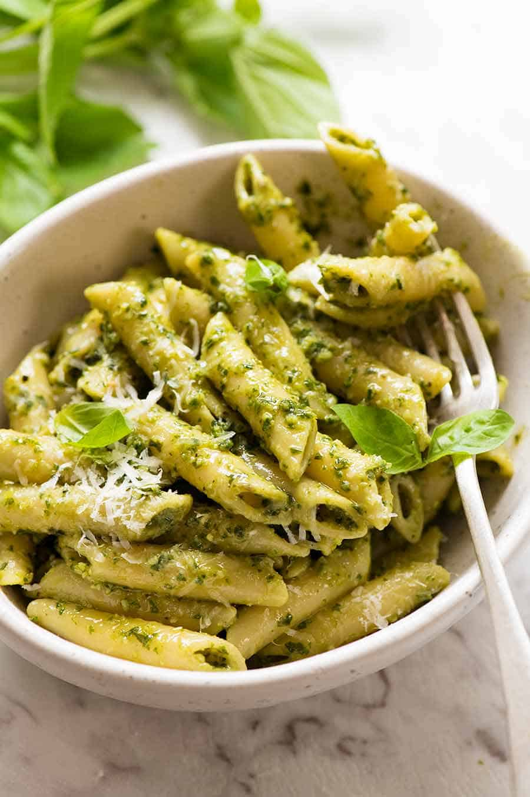

Pesto Pasta

Description
Make a pasta. Put pesto sauce on the top
and mix in. Place pine nuts and balsamic glaze on top.
Ingredients
- Pasta
- Pesto
- Pine nuts
- Balsamic glaze
Steps
- Cook pasta
- Place pesto on top
- Mix pesto in
- Place pine nuts on top
- Put balsamic glaze on top